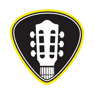

Tuner
Metronome
Loop
Allow microphone access to get started
—
−50¢
In tune
+50¢
Start
🗗
100
BPM
−10
−1
+1
+10
Time signature
2/4
3/4
4/4
5/4
6/8
7/8
Subdivision
Quarter notes
Eighth notes
Triplets
Sixteenth notes
▶ Start
Tap Tempo
Click sound
Sharp click
Wood
Electronic beep
🔊 Click volume
160%
Tap to record your loop
🔴 Record
📂 Open an audio file
⏸ Pause
🗑 Clear
✂️ Trim
💾 Download
0:00
→
0:00
Tap the waveform to start the preview from that point
▶ Preview (loop)
✅ Apply
✖ Cancel
🔊 Loop volume
100%